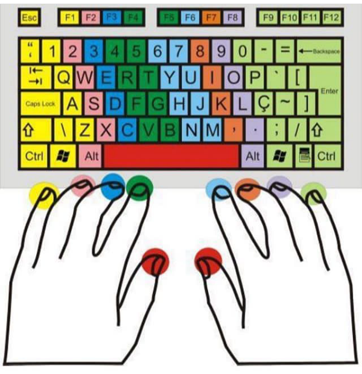

Plano
A saga da saudade
A saudade que fica
A garota sentia falta do seu computador que usava o tempo todo sem paciência vivia digitando para passar sua vida,
Sua família preocupada tirava seu computador de suas mãos e onde a garota passava fingia está digitando em seu computador
Sua práia se desperta e se mostra ser professora de digitação
No começo da digitação não era ordenado
Aprendizado da ordem fez diferença
- Primeiro
- Segundo

Home
Contato
Página principal